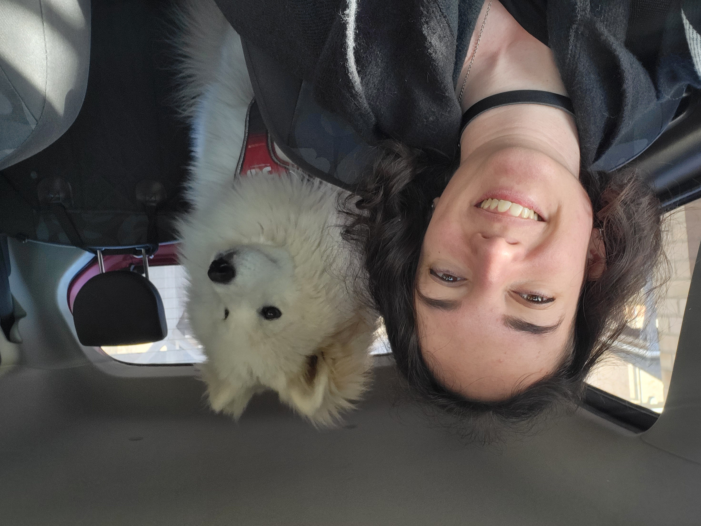

Irene Salazar Medina
Mechatronics Engineer researching Human-Machine Understanding and Interaction
About Me

My career
I obtained a degree in Mechatronics Engineering with honours in my home country of Spain and immediately took off to the industry. I started as a DSP Engineer, writing robust and efficient code meant to run for very long periods of time for processing real-time signals.
After around 5 years, I jumped at the opportunity to start researching Human-Machine Understanding and Affective Computing, bringing my work expertise to a very academic, cutting-edge field. For the past 2 years I have been working to bring affective and cognitive models into machines so our computers can empathise with us in both emotion and reason.
This intersection of state-of-the-art technology and human well-being is where I want to be!
My hobbies
Personally, I have a problem with dipping my toes into any and all hobbies. However, my main hobbies are strength training, drawing, music, videogames and I even build keyboards on the side! You can find information on that here!